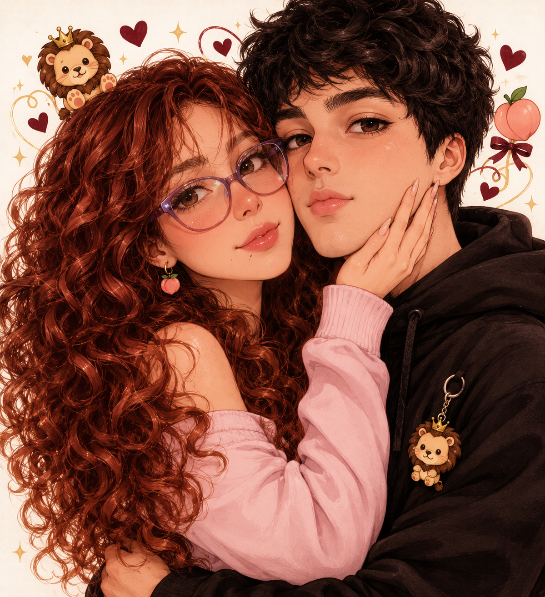

Tú y yo. En esta vida y en muchas más. ♡

Seis meses de elegirnos, extrañarnos, reírnos y soñar con el día en que la distancia sea solo una historia que contaremos abrazados.
22 de abril de 2026
El día en que empezó nuestro capítulo favorito.
Mi amor, feliz medio año. ❤️
Quién iba a pensar que un encuentro en un juego nos iba a traer hasta aquí. Entre mensajes, risas, palabras bonitas y ganas de abrazarnos, te convertiste en alguien muy especial para mí.
A veces quisiera saltarme la distancia, robarte un abrazo larguísimo, llenarte de besos y quedarme cerquita de ti hasta que se nos olvide mirar el reloj. Mientras llega ese día, quiero seguir construyendo contigo: con ternura, deseo, paciencia, honestidad y muchas tonterías que solo nosotros entendemos.
No te prometo una historia perfecta; te prometo cuidar lo que construimos, hablar contigo y seguir soñando en equipo. Quiero vivir esta vida contigo y, si existen muchas más, volver a encontrarte en cada una.
Te amo, mi León. Tu Melocotón, hoy y en todas nuestras vidas. 🍑🦁
Toca cada tarjeta. No vale abrirlas todas sin sonreír. 💌
Un día esta pantalla será un recuerdo y voy a poder mirarte a los ojos, abrazarte fuerte y decirte sin escribirlo: “Lo logramos, mi amor”.
Hasta entonces: tú, yo, paciencia, complicidad y un montón de amor. ♡
¡Yo sabía! Ahora ven y dame ese abrazo pendiente. Te amo muchísimo. 🍑🦁